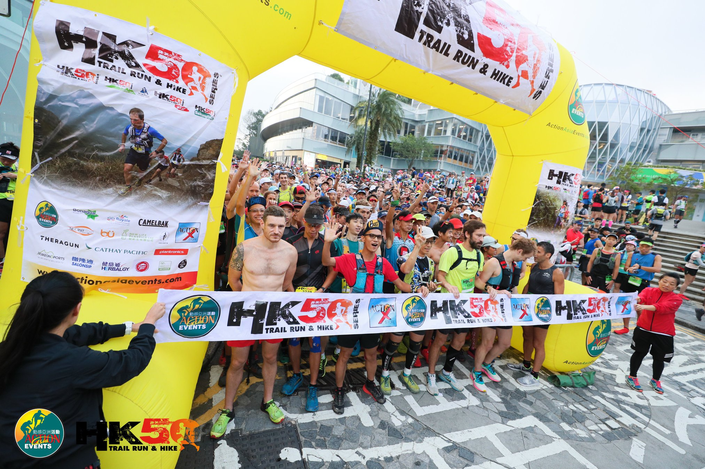
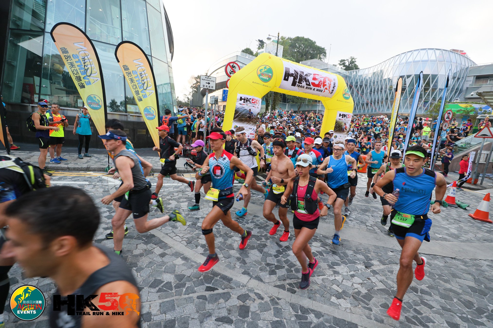

HK50 2019 Race Report
I checked off a 50Km ultra run in my bucket list before the end of 2019. The run was a dream, a sweet dream for me. And now I’m proud to call myself an ultra runner.
 The starting line of HK50 at The Peak
 7am Beep!
I signed up for HK50 in May 2019, back then when I just started trail running. Yes, I decided to do a 50km race when I have gotten into trail running for 5 months. I met a friend, Lyndsey, who invited me to join her in a casual run in Aberdeen Country Park. I immediately fell in love at it, I felt so connected to the nature and got to see the beauty of Hong Kong that I have never looked at before (What a joke, I grew up and lived my entire life here in HK). Ever since, I met more amazing people of the running community and we did even more adventure runs together.
In the hindsight, running an ultra race had never crossed my mind. I had done a full marathon (41.95Km) in Osaka in November 2018. It was tough, my hips, my thighs, my calves were in pain. And why do I want to get myself to a run that is beyond the distance of a full marathon? Why do I have to put myself in so much pain and exhaustion? What do I get after I finish the run? I think it was the “Challenge” itself. I want to see myself getting better, doing things I used to think is impossible, pushing the limits and boundaries.
I put in the training after I signed up and set myself up for the challenge. Things went well until I sprained my ankle after a big climb running back from the Sunset peak. It was a very hot day in August and I was exhausted, I didn’t have proper nutrition and I felt weak. Eventually, I stepped on a rock and twisted my left ankle. It was pretty bad. I got partial tear in my ankle’s ligaments and I had to stop from my training plan. After a month of (almost) no running and ankle strengthening, I return back to the trails, this time realizing the importance of strength and stability as well as proper nutrition and rest. I implemented these strategies to my weekly runs.
Game day
The start of the course was at the Peak. My dad drove me to the start and I had my breakfast of overnight oat and banana in his car. I arrived at 6.15am. Weather is chill and not too sunny, perfect for a long run. I got myself warm ups and checked on my nutrition and gears. Everything is ready, and we start at 7am. The first half is the good flat HK trail section 1-4. I was familiar with the route since I did a couple of runs with friends in HK trails. Plus I did a 45K run with Amanda and friends two weeks before. The first half was pretty okay for me, I ran slightly faster than the average pace while thoroughly enjoying ‘the fly’. Second half was a route with lots of short steep climbs going around Mt Parker, then the fun starts with Mt Butler, Jardines Lookout and Violet Hill.
 The fun 50km route with flatter 1st half in HK trail and short steep climbs in the 2nd climb
The fun 50km route with flatter 1st half in HK trail and short steep climbs in the 2nd climb
It was at a point of running 35K, I felt a bit of tiredness and stiffness in my legs. I made sure I took enough time and well fed at the final checkpoint, right before the climb of Mt Butler. It was tough, stairs after stairs. My strategy was running the flats and downstairs while walking the upstairs. It surely works. Slow and steady, yet I was passing people who stopped at the stairs. At the final 6K, I still got the energy and I wanted to catch up, so I pushed hard on climbing the violet hill. I passed quite some people at that point and we were cheering for one another. The last 3K of catch-water back to the Wong Nai Chung Gap was the hardest. It was so close, however, my body was tired, my legs and my feet ached and there seem to be a never ending path in the front. The last bit was a run-walking to the finish line.
Subscribe to Iris Liu
Get the latest posts delivered right to your inbox